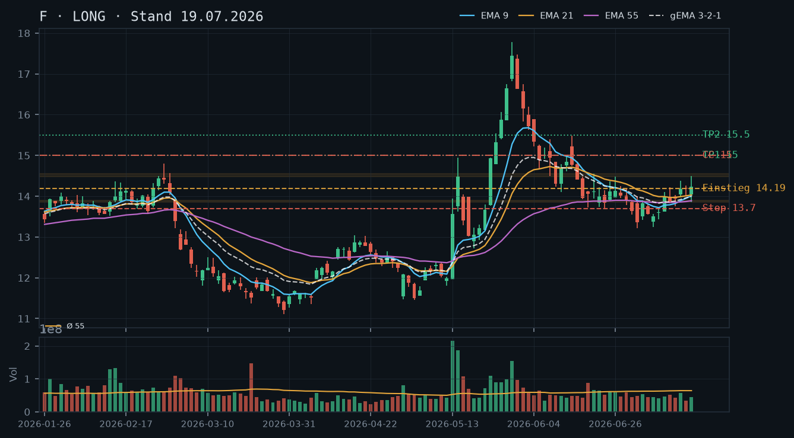
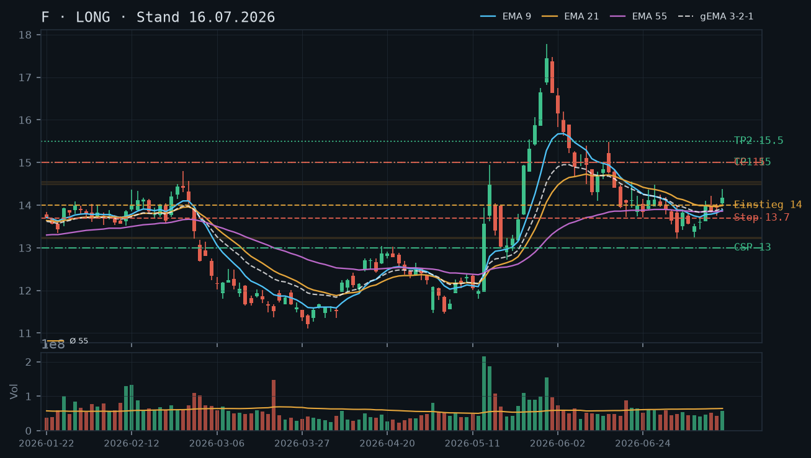
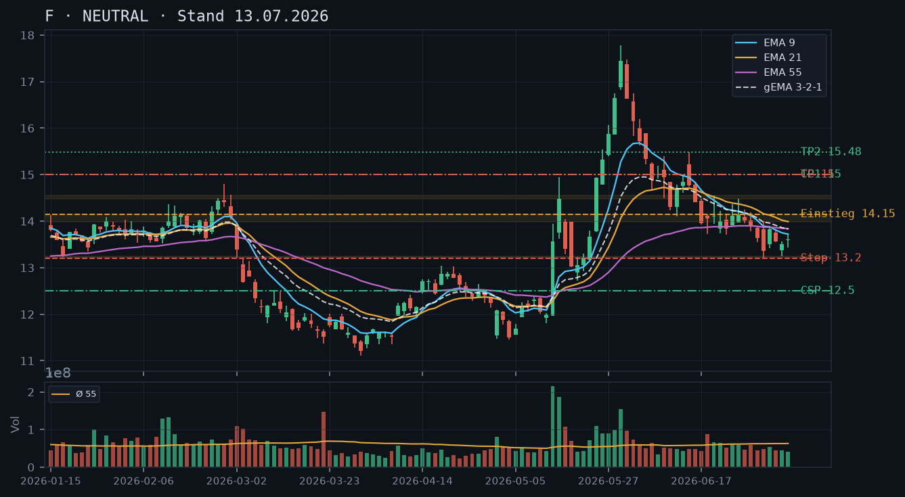
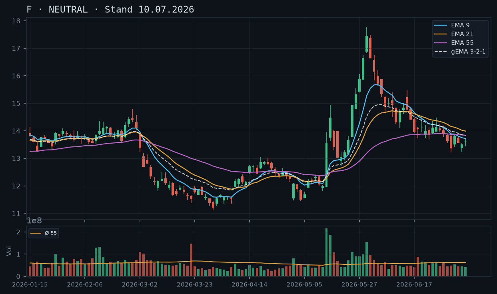

F
Analyse-Historie · neueste zuerstF setzt den Ausbruch fort und drückt am 22.07. auf rel_volumen 0,97 das Tageshoch auf 14,70 – das nächste Kursziel 15,00 rückt in Griffweite; der Covered Call bleibt das Kerninstrument, ein neuer CC auf den 15,00er-Strike ist nach dem Ablauf des 25.07.-Verfalls fällig.

1 · Trendstruktur
Die Trendstruktur ist eindeutig konstruktiv: F zieht eine Serie steigender Hochs und Tiefs – 13,22 (02.07.) → 13,83 (06.07. Rücklauf) → 14,50 (17.07.) → 14,70 (22.07.) – und bestätigt damit den Ausbruch aus der Juni/Juli-Konsolidierung, den die 16.07.-Analyse als Long-Trigger identifiziert hatte. Der Ausbruchslevel 14,15 wurde nie mehr nachhaltig unterschritten; das Tief vom 20.07. bei 13,94 dient als erste intraday-Unterstützung, der stärker bestätigte Support liegt bei 14,00–14,03 (mehrfach angehalten 20.–21.07.). Das Hauptziel 15,00/15,50 aus der laufenden These bleibt intakt.
2 · Candlestick-Formationen
Die Kerze vom 22.07. (Open 14,27 / High 14,70 / Low 14,26 / Close 14,42) ist eine bullische Marubozu-ähnliche Aufwärtskerze mit kleinem Körper und langer oberer Lunte – der Kurs tastete das neue Mehrwochenhoch 14,70 an, konnte es aber nicht halten, was auf Verkaufsdruck nahe 14,70 hindeutet. Am 21.07. eine solide grüne Kerze (14,03 → 14,27). Die Kombination der letzten drei Kerzen (20.07. Inside/Pullback, 21.07. Erholung, 22.07. Hochdruck mit Lunte) zeigt einen Markt, der höher will, aber 14,70 als kurzfristigen Widerstand respektiert.
3 · EMA-Lage (9 / 21 / 55)
EMA9 (14,13) > EMA21 (14,08) > EMA55 (13,92) – klassisch bullische Staffelung, erstmals seit dem Mai-Impulshoch wieder vollständig aufgefächert. Der gema_321 steht bei 14,08 und liegt erstmals seit Wochen klar unter dem aktuellen Kurs (14,38 IBKR-Snapshot), was die Impulsstärke unterstreicht. Der EMA55 steigt nun mit 13,92 stetig an und entfernt sich von der ehemaligen flachen Phase – kein Kompressions-Artefakt mehr, die drei EMAs laufen auseinander.
4 · Trade-Setup
| Richtung | Long |
| Einstieg | Bestand 200 Aktien vorhanden (IBKR 23.07. 11:38); Neueinsteiger: Pullback-Limit 14,10–14,20 (Retest EMA21/gema_321-Cluster) |
| Stop | 13,85 (unter Tief 20.07. 13,94 und EMA55-Puffer; konservativ: 13,70) |
| Ziel | 15,00 (Erstziel) / 15,50 (Hauptziel) |
| CRV | 2,6 : 1 (Erstziel ab 14,38) / 4,7 : 1 (Hauptziel) |
5 · Stillhalter (max. 12 Tage)
Mit 200 Aktien im Bestand und keiner offenen Option (IBKR-Snapshot bestätigt: optionen leer) ist der Covered Call das klare Instrument. Der 15,00er-Strike (Verfall 25.07.) aus der 19.07.-Analyse ist entweder bereits abgelaufen oder kurz vor dem Verfall – ein neuer CC für den nächsten Freitag (01.08.2026) ist jetzt zu initiieren. Ein CSP ist angesichts der bestehenden Aktienposition weiterhin redundant.
| Geschäft | Covered Call |
| Strike | 15.0 |
| Puffer | 4.3 % |
| Zone | über dem Tageshoch 22.07. bei 14,70 (unbestätigter Widerstand, erster Test) und der Juni-Hochzone 14,48–14,56 (22./26.06., mehrfach getestet) |
| Verfall bis | 2026-08-01 (9 Tage) |
| Begründung | Der Strike 15,00 liegt 4,3% über dem aktuellen Kurs (14,38 IBKR). Als Pufferzonen stehen das neue Intraday-Hoch bei 14,70 (22.07., erster Test – noch unbestätigter Widerstand) und die mehrfach getestete Juni-Hochzone 14,48–14,56 vor dem Strike. Das Andienungsszenario bei 15,00 entspricht exakt dem Long-Erstziel der laufenden These – ein Exit auf diesem Niveau wäre strategisch vollständig konsistent und akzeptabel. Der Puffer hat sich gegenüber der 19.07.-Analyse (5,7%) leicht verringert, da der Kurs gestiegen ist. In der Optionskette zu prüfen: Prämie am 15,00er-Strike für Verfall 01.08. im Verhältnis zum 4,3%-Puffer; Delta idealerweise unter -0,20; Bid-Ask-Spread und Open Interest auf ausreichende Liquidität prüfen. |
Bestand: 200 Aktien Long im Bestand (IBKR-Snapshot 23.07. 11:38). Keine offenen Optionen vorhanden – der CC aus der 19.07.-Analyse (Strike 15,00, Verfall 25.07.) ist entweder abgelaufen oder wurde nicht eröffnet; kein aktiver Bestand in der Optionskette. Empfehlung: Neuen Covered Call Strike 15,00 / Verfall 01.08.2026 initiieren. Roll-Trigger für den neuen CC: Tagesschluss über 14,70 mit rel_volumen > 1,3 (Bestätigung des neuen Hochs als Ausbruch) – dann auf Strike 15,50 / Verfall 01.08. oder alternativ Strike 15,00 / Verfall 08.08. rollen, sofern die Prämie dies hergibt. Unterschreitet der Kurs 13,85 auf Tagesbasis, Stop-Überprüfung für den Aktienbestand.
Ausführliche Analyse vom 23.07.2026 anzeigen
F – Detailanalyse 23.07.2026
Abgleich frühere Analysen
Die Kette der drei Voranalysen (13.07., 16.07., 19.07.) hat sich als kohärent erwiesen. Der Long-Trigger aus der 13.07.-Analyse (Tagesschluss über 14,15) wurde am 15.07. mit 14,18 ausgelöst – bestätigt. Der CC-Strike 15,00 / Verfall 25.07. aus der 19.07.-Analyse: Der IBKR-Snapshot vom 23.07. zeigt keine offenen Optionen, sodass dieser CC entweder nicht eröffnet oder bereits geschlossen wurde. Die 19.07.-These zum Aktienbestand (200 Aktien Long) ist dagegen weiterhin aktiv. Die Ziele 15,00/15,50 sind unverändert intakt und wurden noch nicht erreicht.
1. Trendstruktur
F hat seit dem Dreifach-Tief bei 13,22 (02.07.) eine klare Aufwärtsstruktur aufgebaut:
- Tiefs steigen: 13,22 (02.07.) → 13,76 (14.07.) → 13,85 (17.07.) → 13,94 (20.07.)
- Hochs steigen: 13,895 (06.07.) → 14,375 (15.07.) → 14,50 (17.07.) → 14,70 (22.07.)
Das neue Mehrwochenhoch bei 14,70 (22.07.) überbietet das bisherige Wochenhoch 14,50 (17.07.) und ist damit die erste technische Bestätigung, dass der Ausbruch keine Totgeburt war. Kritischer Support-Stack: 14,00–14,08 (gema_321-Niveau, mehrfach gehalten 20.–21.07.), darunter 13,85–13,94 (Tiefs 17.–20.07.), dann erst die starke Zone 13,22–13,24 (Dreifach-Tief). Widerstandscluster: 14,70 (Tageshoch 22.07., erster/unbestätigter Test), dann 15,00–15,10 (Erstrundziel und psychologische Marke), darüber 15,50 (Hauptziel aus dem Fibonacci-Cluster des Mai-Impulses).
2. Candlestick-Formationen
Die letzten fünf Kerzen im Überblick:
- 17.07.: Bullische Kerze mit langer oberer Lunte bis 14,50 – erster Angriff auf den Widerstand, scheitert knapp, Schluss 14,23.
- 20.07.: Inside-Day-ähnlich (High 14,30, Low 13,94), Schluss 13,99 – Konsolidierung/Pullback nach dem Hoch, Volumen nur 0,62× Schnitt, kein Panik-Selling.
- 21.07.: Solide grüne Recovery-Kerze (14,03 → 14,27), Erholung vom 20.07.-Tief, rel_volumen 0,77.
- 22.07.: Kerze mit Körper 14,27–14,42, Lunte bis 14,70 – Kurs testet das neue Hoch, kann nicht halten, schließt in der Mitte der Tagesspanne. Interpretation: bullisches Ausbruchsattempt mit Widerstand bei 14,70; kein Reversal-Signal, da Schluss deutlich über dem Open und klar über dem Vortag.
Das Muster der letzten Wochen (kleine Tagesspannen, unterdurchschnittliches Volumen) bleibt grundlegend erhalten. Der 22.07. brachte mit rel_volumen 0,97 fast Durchschnittsvolumen – der erste Tag nahe dem Schnitt seit Wochen. Ein echter Ausbruch über 14,70 bräuchte rel_volumen > 1,3.
3. EMA-Lage
Erstmals seit dem Rücklauf der Juni-Hochs zeigt der EMA-Verbund eine sauber bullische Staffelung: EMA9 (14,13) > EMA21 (14,08) > EMA55 (13,92). Der gema_321 bei 14,08 liegt um ~0,30 USD unter dem aktuellen Kurs von 14,38 – ein gesunder Abstand ohne überhitzte Überstreckung. Der EMA55 steigt nun kontinuierlich: von 13,85 (07.07.) auf 13,92 (22.07.), d.h. er gewinnt ~1 Cent pro Tag. In etwa 6–7 Handelstagen wird er 14,00 erreichen, was den Support-Stack von unten verstärkt. Kein Kompressions-Artefakt mehr erkennbar – alle drei EMAs laufen auseinander und aufwärts.
4. Trade-Setups (Alternative A/B/C)
Setup A – Bevorzugt: Bestandshalter (200 Aktien vorhanden)
Kein neuer Einstieg nötig. Stop bei 13,85 (unter dem Tief 20.07. 13,94 und knapp unter EMA9-Stützzone). Ziel 1: 15,00 (CRV: 2,6:1 vom aktuellen Kurs 14,38). Ziel 2: 15,50 (CRV: 4,7:1). Trailing-Stop-Logik: Nach Erreichen 15,00 → Stop auf 14,50 nachziehen.
Setup B – Neueinsteiger Long, konservativ:
Pullback-Limit 14,10–14,20 (Retest gema_321 + EMA21-Cluster). Stop 13,85. Ziel 1: 15,00 (CRV ab 14,15: ~4,7:1). Ziel 2: 15,50. Bedingung: Kurs muss 14,10 auf Tagesbasis halten, kein Close darunter.
Setup C – Aggressiver Long-Nachkauf bei Ausbruch:
Stop-Buy-Order über 14,72 (Tages-High 22.07. + 2 Cent). Ziel 15,50. Stop 14,20. CRV: 2,0:1. Bedingung: rel_volumen am Ausbruchstag > 1,3; ohne Volumensbestätigung kein Nachkauf.
Kein Short-Setup: Die Trendstruktur (steigende Hochs/Tiefs, EMA-Staffelung) gibt kein valides Short-Setup her. Erst ein Tagesschluss unter 13,85 mit erhöhtem Volumen würde die Analyse neu kalibrieren.
5. Stillhalter – Ausführliche Herleitung
Covered Call – Strike 15,00 / Verfall 01.08.2026
Zonen-Herleitung: Zwischen aktuellem Kurs (14,38) und Strike (15,00) liegen zwei Widerstandsebenen:
- 14,70: Tageshoch vom 22.07. – erster/unbestätigter Widerstand (nur ein Test bisher). Kurs hat hier eine Lunte hinterlassen, was Verkaufsdruck signalisiert.
- 14,48–14,56: Juni-Hochzone (22./26.06.), mehrfach getestet und als Widerstand bestätigt. Diese Zone hat den Kurs Ende Juni konsistent nach unten gedrückt. Sie ist jetzt der stärkste technische Puffer vor dem 15,00er-Strike.
Puffer zum aktuellen Kurs: 4,3%. Das ist enger als vor vier Tagen (19.07.: 5,7%), weil der Kurs zwischenzeitlich gestiegen ist. Dennoch ausreichend: Für einen Close über 15,00 müsste F beide Widerstandsebenen in 9 Handelstagen überwinden – angesichts der täglichen Spannen von 0,3–0,7 USD nur bei einem starken Katalysator (Earnings, News) realistisch.
Andienungsszenario: Eine Andienung bei 15,00 ist aus Sicht der Long-These vollständig konsistent – 15,00 ist exakt das Erstziel. Die 200 Aktien würden zu einem Preis abgegeben, der die Position profitabel schließt. Kein Schmerzszenario.
Roll-Trigger:
- Tagesschluss über 14,70 mit rel_volumen > 1,3 → sofortiger Roll auf Strike 15,50 / Verfall 01.08. oder Strike 15,00 / Verfall 08.08., wenn Prämie dies hergibt.
- Tagesschluss über 14,56 (Juni-Hochzone überwunden) mit Volumen > Schnitt → frühzeitiger Roll erwägen, Puffer schrumpft kritisch.
- Kurs fällt unter 14,00 → CC verfällt wertlos, kein Roll nötig; ggf. neuen CC mit näherem Strike initiieren.
In der Optionskette zu prüfen: Prämie am 15,00er-Strike für Verfall 01.08. – sollte angesichts des 4,3%-Puffers mindestens 0,15–0,20 USD Mid-Preis einbringen, um das Risiko zu rechtfertigen. Delta idealerweise zwischen -0,15 und -0,22. Bid-Ask-Spread unter 0,05 USD für ausreichende Liquidität. Open Interest am 15,00er historisch stark (runde Zahl), sollte kein Problem sein.
CSP – Nicht empfohlen: Mit 200 Aktien im Bestand wäre ein zusätzlicher CSP eine Verdopplung des F-Engagements ohne zusätzlichen strukturellen Mehrwert. Die Margin wird sinnvoller in anderen Titeln eingesetzt. Kein CSP-Setup.
F hält den Ausbruch über 14,15 solide und konsolidiert auf Wochensicht zwischen 14,00 und 14,50 – der Trend bleibt konstruktiv, das Hauptziel 15,00/15,50 ist noch nicht erreicht; mit 200 Aktien im Bestand ist ein Covered Call das Instrument der Stunde.

1 · Trendstruktur
F etabliert seit dem Triggerbreak vom 15.07. (Schlusskurs 14,18) eine flache Konsolidierung zwischen 13,85 und 14,50. Höhere Tiefs seit dem Dreifach-Tief 13,22–13,24 (Juli) sind intakt; das Verlaufshoch der letzten Woche liegt bei 14,50 (17.07.). Übergeordnet bleibt die Trendstruktur bullish: Die Serie aus höheren Tiefs (13,22 → 13,50 → 13,76 → 13,85) ist ungebrochen. Kritische Unterstützung: 13,85–13,90 (Tief 17.07. + EMA21-Annäherung); darunter wäre der Ausbruch zu hinterfragen.
2 · Candlestick-Formationen
Die letzten vier Kerzen (14.07.–17.07.) zeigen eine tight-range Konsolidierung mit Schlusskursen zwischen 13,94 und 14,23 – keine Shooting Stars, keine Bearish Engulfings. Die Kerze vom 17.07. weist einen langen oberen Docht bis 14,50, aber einen festen Schlusskurs bei 14,23 auf: bullisher Kern, etwas Verkaufsdruck an der 14,50-Zone. Volumen zuletzt moderat bei 0,52–0,89× Schnitt – keine Panikverkäufe, aber auch noch kein Ausbruchsvolumen.
3 · EMA-Lage (9 / 21 / 55)
EMA9 (14,01) kreuzt EMA21 (14,03) im Bereich des Schlusskurses – minimale Kompression, aber keine Fehlsignale mehr. EMA55 bei 13,89 zeigt leicht positive Steigung. Der gewichtete gema_321 (14,00) liegt jetzt erstmals seit Monaten unter dem Kurs (14,19), was die Trendwende technisch bestätigt. Der EMA-Verbund zieht sukzessive nach oben – keine Divergenz.
4 · Trade-Setup
| Richtung | Long |
| Einstieg | 14,19 (Bestand bereits vorhanden per IBKR-Snapshot; Neueinsteiger: Pullback-Limit 13,90–14,00 bevorzugt) |
| Stop | 13,70 (unter EMA-Cluster und Tief 14.07. 13,76; konservativ: 13,20) |
| Ziel | 15,00 (Erstziel) / 15,50 (Hauptziel) |
| CRV | 2,1 : 1 (Erstziel ab 14,19) / 3,3 : 1 (Hauptziel) |
5 · Stillhalter (max. 12 Tage)
Mit 200 Aktien im Depot ist der Covered Call das klare Instrument – 2 Kontrakte sind vollständig gedeckt. Die Konsolidierung unterhalb der 14,50-Zone bei moderatem Volumen ist ein klassisches CC-Setup: Prämie kassieren, solange der Kurs nicht ausbricht. Ein CSP wäre angesichts der bestehenden Aktienposition redundant (keine freie Margin sinnvoll einsetzen, wenn der Upside bereits mit der Aktie partizipiert wird).
| Geschäft | Covered Call |
| Strike | 15.0 |
| Puffer | 5.7 % |
| Zone | über dem Verlaufshoch 14,50 (17.07.) und der Juni-Hochzone 14,48–14,56 (22./26.06.) – zwei Widerstandsebenen als Puffer vor dem Strike |
| Verfall bis | 2026-07-25 (6 Tage) |
| Begründung | Der Strike 15,00 hat sowohl das aktuelle Wochenhoch 14,50 als auch die Juni-Hochzone 14,48–14,56 als Pufferzonen vor sich. Ein Anstieg von 5,7% in 6 Tagen wäre technisch nur bei einem starken Katalysator (Nachrichten, Earnings) möglich; die täglichen Spannen der letzten Woche lagen bei 0,3–0,65 USD. Andienung bei 15,00 entspricht exakt dem Long-Erstziel aus der bestehenden These – ein Exit auf diesem Niveau wäre strategisch vollständig konsistent. Prüfen in der Optionskette: Prämie am 15er-Strike für Verfall 25.07. im Verhältnis zum 5,7%-Puffer; Delta sollte idealerweise unter -0,20 liegen; Bid-Ask-Spread auf Liquidität prüfen. |
Bestand: 200 Aktien Long im Bestand (IBKR-Snapshot 19.07. 12:11). Kein offener Short-Put oder Short-Call vorhanden. Der Covered Call auf den 15,00er-Strike (Verfall 25.07.) ist vollständig gedeckt. Roll-Trigger für den CC: Tagesschluss über 14,56 mit überdurchschnittlichem Volumen (rel_volumen > 1,3) würde den Puffer signifikant verkleinern – dann auf Verfall 01.08. und/oder Strike 15,50 rollen, sofern Prämie dies hergibt. Unterschreitet der Kurs 13,85 auf Tagesbasis, Stop-Überprüfung für den Aktienbestand empfohlen.
Ausführliche Analyse vom 19.07.2026 anzeigen
Ford Motor (F) – Technische Analyse & Stillhalter-Briefing
Stand: 19. Juli 2026 | Kurs: 14,19 USD
1. Trendstruktur
Die Analyse vom 16.07. wird vollständig bestätigt: Der Long-Trigger (Tagesschluss über 14,15) ist valide und hält. F konsolidiert seit vier Handelstagen zwischen 13,85 (Tief 17.07.) und 14,50 (Hoch 17.07.) – eine klassische Post-Breakout-Pause nach einem wochenlangen Seitwärtsmarkt.
Die übergeordnete Trendstruktur ist bullish strukturiert: Die Serie aus höheren Tiefs zieht sich von 13,22 (02./07. Juli) über 13,50 (08.07.) und 13,76 (14.07.) bis 13,85 (17.07.) durch. Jedes Pullback wird auf einem höheren Niveau aufgefangen. Solange 13,85–13,90 als neue Support-Zone hält, bleibt die Trendstruktur intakt. Kritisch zu beobachten: Ein Tagesschluss unter 13,76 (Tief 14.07.) würde erste Warnsignale senden; ein Bruch unter 13,50 würde das Ausbruchs-Setup entwerten.
Schlüsselzonen:
- Support 1: 13,85–13,90 (Post-Breakout-Base + EMA21-Annäherung)
- Support 2: 13,22–13,24 (Dreifach-Tief, mehrfach bestätigt – Jun/Jul)
- Widerstand 1: 14,48–14,56 (Juni-Hochzone 22./26.06., aktuelles Wochenhoch 14,50)
- Widerstand 2: 15,00–15,50 (Kurszielzone, Mai-Konsolidierungs-Cluster)
2. Candlestick-Formationen
Die vier jüngsten Tageskerzen (14.07.–17.07.) zeigen allesamt positive Schlusskurse mit verkürzten Körpern – charakteristisch für eine Konsolidierung ohne Erschöpfung. Die Kerze vom 17.07. verdient besondere Aufmerksamkeit: Open 14,04, High 14,50, Low 13,85, Close 14,23. Der lange obere Docht (14,50) signalisiert vorübergehenden Verkaufsdruck an der Widerstandszone, der feste Schluss bei 14,23 jedoch Käuferdominanz im Tagesverlauf. Kein bearishes Umkehrmuster erkennbar.
Das Volumen der letzten vier Kerzen liegt bei 0,52–0,89× Schnitt (vol_schnitt_55 ≈ 64 Mio.) – also deutlich unter dem Ausbruchsniveau vom 15.07. (0,89×) und weit unter den Impulskerzen des Mai. Diese Volumenkontraktion in der Konsolidierung ist konstruktiv: Wenig Verkäufer, wenig Käufer – der Markt verdaut den Ausbruch.
3. EMA-Lage
Erstmals seit Monaten notiert der Kurs (14,19) über allen drei EMAs: EMA9 (14,01), EMA21 (14,03), EMA55 (13,89). Die Reihenfolge EMA9 > EMA21 > EMA55 ist bullish geordnet, allerdings ist der Spread zwischen EMA9 und EMA21 minimal (0,02 USD) – eine leichte Kompression, die auf die träge Post-Breakout-Bewegung hinweist, aber kein Fehlsignal darstellt.
Der gewichtete gema_321 (14,00) liegt erstmals unter dem aktuellen Kurs – ein strukturelles Positivsignal, das die Trendwende technisch untermauert. Der EMA55 bei 13,89 dreht jetzt spürbar nach oben, was die mittelfristige Trendwende festigt. Sollte der EMA9 den EMA21 nach oben kreuzen und sich der Abstand ausweiten, wäre das ein Bestätigungssignal für die nächste Aufwärtswelle.
4. Trade-Setups (Aktie)
Setup A – Bestandshalter (bevorzugt, da 200 Aktien per IBKR-Snapshot):
Position halten. Stop bei 13,70 (unter EMA-Cluster und Tief 14.07.), konservative Alternative 13,20 (unter Dreifach-Tief). Erstziel 15,00 (CRV 2,1:1), Hauptziel 15,50 (CRV 3,3:1). Keine Nachkäufe bei Verfolgung des aktuellen Kursniveaus.
Setup B – Neueinsteiger (Pullback-Variante):
Limit-Order 13,90–14,00 (Retest der gebrochenen 14,00-Zone + EMA-Cluster-Annäherung). Stop: 13,70. Erstziel: 15,00 (CRV 3,3:1). Nur ausführen, wenn Kerze keinen Close unter 13,85 zeigt.
Setup C – Breakout-Variante (aggressive):
Stop-Buy bei 14,52 (über die 14,48–14,56-Widerstandszone). Stop: 14,00. Ziel: 15,00/15,50. CRV zum Erstziel: 2,1:1. Bedingung: Volumen am Ausbruchstag > 1,2× Schnitt (>77 Mio.), sonst Fakeout-Risiko hoch.
5. Stillhalter-Schwerpunkt: Covered Call
Der IBKR-Snapshot vom 19.07. (12:11 Uhr) bestätigt 200 Aktien Long ohne offene Optionspositionen. Das ist die ideale Ausgangslage für einen Covered Call auf 2 Kontrakte (vollständig gedeckt, kein Naked-Call-Risiko).
Covered Call: Strike 15,00 | Verfall 25.07.2026 (6 DTE)
Zonen-Herleitung: Zwischen aktuellem Kurs (14,19) und Strike 15,00 liegen zwei eigenständige technische Barrieren:
1. 14,48–14,56: Juni-Hochzone (22.06. Hoch 14,56 / 26.06. Hoch 14,48) – mehrfach besucht, nie nachhaltig überwunden. Das Wochenhoch vom 17.07. (14,50) hat diese Zone erneut bestätigt.
2. 15,00: Psychologisches Rund-Level und Knotenpunkt der Juni-Korrekturphase (08.06. Close 15,00, 09.06. Close 14,95).
Puffer: (15,00 – 14,19) / 14,19 = 5,7% bis zur Andienung – zwei Widerstandszonen müssen in 6 Handelstagen gebrochen werden. Bei einer Durchschnitts-Tagesspanne von 0,40–0,55 USD in der Konsolidierung ist das ambitioniert ohne externen Katalysator.
Andienungsszenario: Eine Andienung bei 15,00 USD entspricht exakt dem Erstziel der Long-These – diese Konsistenz ist entscheidend. Der Verkauf der Aktie auf diesem Niveau wäre strategisch willkommen, keine erzwungene Abgabe unter Wert. Die Aktie würde auf dem Niveau abgegeben, das zugleich als fairer Exit galt.
Roll-Trigger: Tagesschluss über 14,56 mit rel_volumen > 1,3× (Ausbruch mit Volumenbestätigung) → CC vor Verfall schließen und auf Strike 15,50, Verfall 01.08.2026 rollen, falls Prämie den Spread rechtfertigt. Alternativ: Strike beibehalten, Verfall auf 01.08. verlängern (Zeitwert aufrollen). Ein Rollen nur dann, wenn die Netto-Prämie positiv bleibt.
Was in der Optionskette zu prüfen ist:
- Prämie des 15,00er CC für Verfall 25.07.: Sollte in Relation zum 5,7%-Puffer stehen (Faustformel: mind. 0,10–0,15 USD Prämie für diesen Puffer bei normaler IV)
- Delta: Angestrebt unter -0,20 (OTM, geringe Wahrscheinlichkeit der Ausübung)
- Bid-Ask-Spread: Enge Spreads bei F typisch; auf ausreichendes Open Interest achten
- Implied Volatility: Falls IV nach einem Nachrichtenereignis erhöht ist, steigt die Prämie – Gelegenheit, den Strike auf 15,50 anzuheben bei gleichem Prämienniveau
Warum kein CSP?
Mit 200 Aktien Long ist ein CSP strukturell redundant: Man wäre sowohl über die Aktie als auch über den Put long exponiert zum gleichen Basiswert. Ein CSP würde das Gesamt-Long-Exposure erhöhen, ohne zusätzliche strategische Diversifikation zu liefern. Zudem wäre jeder technisch sinnvolle CSP-Strike (z.B. 13,00 oder 12,50) weit vom aktuellen Kurs entfernt – die Prämie wäre minimal. Qualität vor Vollständigkeit: CSP = null.
Historischer Analysen-Abgleich
Die Analyse vom 13.07. nannte CSP 12,50 / CC 15,00 als erste Stillhalter-Parameter. Der CC-Strike 15,00 hat alle drei Revisionen überlebt und bleibt unverändert der technisch korrekte Anker. Der CSP 12,50 wurde durch die zwischenzeitliche Kursentwicklung (Ausbruch über 14,15) deutlich distanzierter – das Andieungsszenario dort bleibt akzeptabel, aber bei aktivem Aktienbestand ist der CSP wie beschrieben redundant.
Die Analyse vom 16.07. warnte bereits auf den engeren CC-Puffer (5,8% vs. 10,2% am 13.07.) – heute liegt der Puffer bei 5,7%, faktisch unverändert. Der Kurs hat sich in der Konsolidierung kaum bewegt. Der CC-Strike 15,00 bleibt die erste Wahl.
Der Long-Trigger der 13.07.-Analyse (Tagesschluss über 14,15) wurde am 15.07. mit einem Schlusskurs von 14,18 erreicht – nach wochenlanger richtungsloser Konsolidierung ein erster echter Ausbruch, allerdings auf unterdurchschnittlichem Volumen, was zu etwas Vorsicht rät. Ziele 15,00/15,50 bleiben unverändert.

1 · Trendstruktur
Nach der Konsolidierung zwischen der dreifach bestätigten Unterstützung 13,22–13,24 und dem Widerstandscluster 13,99–14,56 (Mitte Juni bis Mitte Juli) gelang am 15.07. der in der Vorlage geforderte Ausbruch: Schlusskurs 14,18, klar über der 14,15er-Marke. Die wochenlange Seitwärtsbewegung, die zwei aufeinanderfolgende NEUTRAL-Einschätzungen (10./13.07.) rechtfertigte, ist damit vorerst aufgelöst.
2 · Candlestick-Formationen
13.07.: Schluss 13,85, noch innerhalb der Range. 14.07.: Schluss 13,94, leichte Stärke. 15.07.: Eröffnung 14,04, Hoch 14,375, Schluss 14,18 – klarer Ausbruch über die gesamte Widerstandszone, aber bei rel_volumen von nur 0,89 (unterdurchschnittlich) – ein Ausbruch ohne Volumenbestätigung, der etwas Vorsicht verdient.
3 · EMA-Lage (9 / 21 / 55)
Weiterhin sehr enger Kompressionscluster: EMA55 (13,86) < EMA9 (13,89) < gema_321 (13,92) < EMA21 (13,99) – nur 0,13 Punkte Spanne, unverändert seit den Vorlagen. Der Kurs (14,18) hat sich jetzt aber klar über den gesamten Cluster gesetzt (0,19–0,32 Punkte Abstand) – die Kompression beginnt sich nach oben aufzulösen, ist aber noch nicht vollständig entschieden.
4 · Trade-Setup
| Richtung | Long |
| Einstieg | Bereits ausgelöst am 15.07. bei Schlusskurs 14,18 über 14,15; für Nacheinsteiger: Pullback-Kauf um 14,00 (Retest der gebrochenen Zone) statt Verfolgung der Ausbruchskerze |
| Stop | 13,70 (unter EMA-Cluster und Tief vom 14.07.) – konservativere Alternative: 13,20 unter dem Dreifach-Tief für mehr Sicherheitsabstand |
| Ziel | 15,00 (Zwischenziel) / 15,50 (Hauptziel, unverändert aus der Vorlage) |
| CRV | 1,7 : 1 (Zwischenziel) / 2,75 : 1 (Hauptziel) |
5 · Stillhalter (max. 12 Tage)
Die dreifach bestätigte Zone 13,22–13,24 bleibt ein solides CSP-Fundament, auch nach dem Ausbruch. Der noch nicht getestete Widerstand bei 15,00 (Juni-Hochzone) bleibt ein sinnvoller CC-Anker – die enge Handelsspanne der letzten Wochen begünstigt weiterhin beidseitige Stillhaltergeschäfte, auch wenn sich die Balance jetzt leicht Richtung Long verschoben hat.
| Geschäft | Cash-Secured Put |
| Strike | 13.0 |
| Puffer | 8.3 % |
| Zone | unter der dreifach bestätigten Zone 13,22–13,24 (02.03., 02.07., 08.07.) und den Mai-Tiefs 13,015–13,03 |
| Verfall bis | 2026-07-24 (8 Tage) |
| Begründung | Strike liegt unter der mehrfach verteidigten Zone, die jetzt zusätzlich durch den Ausbruch als potenzieller neuer Support gestützt wird. Andienung bei 13,00 wäre ein Einstieg nahe der April-Basis – im Kontext der jetzt bestätigten Erholung ein attraktives Niveau. Prüfen: Prämie im Verhältnis zum 8,3%-Puffer, Liquidität am 13,00er. |
| Geschäft | Covered Call |
| Strike | 15.0 |
| Puffer | 5.8 % |
| Zone | über der Juni-Hochzone 14,48–14,56 (22./26.06.), bislang unverändert und noch nicht getestet |
| Verfall bis | 2026-07-24 (8 Tage) |
| Begründung | Strike unverändert aus der Vorlage, da diese Zone durch den jüngsten Ausbruch noch nicht berührt wurde. Der Puffer ist mit 5,8% (vs. 10,2% am 13.07.) jetzt deutlich enger, da der Kurs zwischenzeitlich gestiegen ist – bei einer Fortsetzung des Ausbruchs realistischer erreichbar. Andienung bei 15,00 wäre nahe dem Hauptziel der Long-These ein fairer Exit. Prüfen: Prämie im Verhältnis zum 5,8%-Puffer, Liquidität am 15,00er; Rollentrigger wäre ein Tagesschluss über 14,56 mit Volumen. |
Ausführliche Analyse vom 16.07.2026 anzeigen
F – Ausbruch aus wochenlanger Konsolidierung bestätigt
1. Der Ausbruch im Detail
Zwei aufeinanderfolgende NEUTRAL-Analysen (10./13.07.) definierten die Bedingungen klar: Long erst bei Tagesschluss über 14,15. Genau das geschah am 15.07. mit einem Schluss von 14,18. Bemerkenswert: Das Volumen (rel_volumen 0,89) lag unter dem Durchschnitt – ein Ausbruch ohne breite Marktbeteiligung, was die Nachhaltigkeit etwas in Frage stellt, auch wenn der Trigger formal sauber erreicht wurde.
2. EMA-Kompression löst sich langsam
Die außergewöhnlich enge EMA-Kompression (nur 0,13 Punkte Spanne zwischen EMA55 und EMA21) besteht seit Wochen unverändert. Der Kurs hat sich jetzt darüber gesetzt, aber die EMAs selbst haben sich noch nicht klar in eine bullische Reihenfolge sortiert – das braucht noch ein paar weitere Tage Bestätigung.
3. Setup-Empfehlung
Für Nacheinsteiger ist ein Pullback-Kauf um 14,00 (Retest der gebrochenen Zone von oben) einem direkten Kauf auf der Ausbruchskerze vorzuziehen. Stop bei 13,70 (eng, unter EMA-Cluster) oder konservativer bei 13,20 (unter dem kompletten Dreifach-Tief) für mehr Sicherheitsabstand angesichts des schwachen Ausbruchsvolumens. Ziele unverändert bei 15,00/15,50.
4. Stillhalter-Vertiefung
CSP bei 13,00 (8,3% Puffer): Nutzt weiterhin die dreifach bestätigte Zone, die durch den Ausbruch zusätzliche Relevanz als potenzieller neuer Support gewinnt. CC bei 15,00 (5,8% Puffer, deutlich enger als am 13.07. wegen des gestiegenen Kurses): Bleibt an der noch unberührten Juni-Hochzone verankert. Andienungsszenario CSP: Kauf bei 13,00 nahe der April-Basis, im Kontext der bestätigten Erholung attraktiv. Andienungsszenario CC: Abgabe bei 15,00 nahe dem Hauptziel der Long-These, komfortabler Exit. Rollentrigger CSP: Tagesschluss unter 13,20. Rollentrigger CC: Tagesschluss über 14,56 mit Volumen.
5. Abgleich mit früheren Analysen
Die NEUTRAL-Einschätzungen vom 10./13.07. werden durch das Erreichen des klar definierten Long-Triggers abgelöst. Die Ziele 15,00/15,50 und die Stillhalter-Zonen bleiben strukturell unverändert, lediglich die Strikes/Puffer wurden an den gestiegenen Kurs angepasst.
F konsolidiert weiterhin richtungslos unter den fallenden EMAs über der dreifach getesteten Unterstützung 13,22 – kein Aktien-Setup, aber die klar definierten Zonen liefern brauchbare Stillhalter-Strikes auf beiden Seiten (CSP 12,50 / CC 15,00).

1 · Trendstruktur
F befindet sich seit dem Verlaufshoch bei 17,78 (29.05.) in einer kontrollierten Korrektur mit lückenloser Serie tieferer Hochs (17,78 → 16,75 → 15,48 → 14,56 → 14,48 → 14,185 → 13,895) und tieferer Tiefs bis 13,22 (02.07.). Die Zone 13,22–13,24 ist inzwischen dreifach bestätigt (März-Tief 13,22 am 02.03., 13,22 am 02.07., 13,24 am 08.07.) und hält bislang. Übergeordnet bleibt der Impuls aus Mai (11,80 → 17,78) intakt, kurzfristig fehlt jeder Richtungsimpuls – die NEUTRAL-Einstufung der Vor-Analyse wird bestätigt.
2 · Candlestick-Formationen
Die Kerze vom 02.07. (Tief 13,22, Schluss 13,36) zeigte einen langen unteren Docht direkt an der Unterstützung – ein hammerähnlicher Test. Der Retest am 08.07. (Tief 13,24, Schluss 13,50) hielt erneut, gefolgt von einer kleinen grünen Kerze am 09.07. (Schluss 13,61) auf schwachem Volumen (rel_volumen 0,65). Die Unterstützung wird verteidigt, aber ohne Kaufdruck – klassisches Konsolidierungsbild.
3 · EMA-Lage (9 / 21 / 55)
Die EMAs sind stark komprimiert und leicht bärisch gestaffelt: EMA9 (13,72) < EMA55 (13,84) < EMA21 (13,99), der Kurs (13,61) notiert unter allen dreien. Der gewichtete Verbund gema_321 fällt seit dem 25.06. (14,23) an jedem Handelstag kontinuierlich bis 13,83 (09.07.) – gleichmäßige Abwärtsdrift ohne Beschleunigung. Die Kompression aller drei EMAs auf unter 2% Spannweite ist typisch für eine Entscheidungsphase.
4 · Trade-Setup
| Richtung | Kein Trade |
| Einstieg | Long erst bei Tagesschluss über 14,15 (Rückeroberung EMA21 + Bruch des Juni-Hochcluster), Short erst bei Tagesschluss unter 13,20 |
| Stop | 13,20 (Long-Szenario, unter Dreifach-Tief) bzw. 13,95 (Short-Szenario) |
| Ziel | 15,00–15,50 (Long) bzw. 12,70 (Short) |
| CRV | ~3,5 : 1 (Long, hypothetisch ab Trigger) |
5 · Stillhalter (max. 12 Tage)
Die enge Konsolidierung zwischen dreifach bestätigter Unterstützung (13,22) und mehrstufigem Widerstandscluster (13,99–14,56) ist ein gutes Stillhalter-Umfeld für beide Seiten; wegen der fallenden EMAs hat der Covered Call leicht Vorrang, der CSP profitiert vom dreifach verteidigten Boden.
| Geschäft | Cash-Secured Put |
| Strike | 12.5 |
| Puffer | 8.2 % |
| Zone | unter Dreifach-Tief 13,22/13,24 (02.03., 02.07., 08.07.) und unter den Mai-Tiefs 13,015/13,03 (18./19.05.) |
| Verfall bis | 2026-07-24 (11 Tage) |
| Begründung | Der Strike 12,50 hat gleich zwei Unterstützungsebenen als Puffer vor sich (13,22-Zone und 13,00-Zone); bei Andienung entstünde ein Einstieg am oberen Rand der April-Basis 11,5–12,4 – im Kontext des intakten Mai-Impulses ein akzeptables Kaufniveau. |
| Geschäft | Covered Call |
| Strike | 15.0 |
| Puffer | 10.2 % |
| Zone | über EMA21/Juni-Cluster 13,99–14,15 und über den Juni-Hochs 14,48–14,56 (22./26.06.) |
| Verfall bis | 2026-07-24 (11 Tage) |
| Begründung | Zwei komplette Widerstandszonen liegen zwischen Kurs und Strike; ein Anstieg von über 10% in 11 Tagen ist angesichts der jüngsten Tagesspannen (2–4%) ohne Katalysator unwahrscheinlich. Eine Abgabe zu 15,00 läge nahe dem Juni-Niveau und wäre als Exit vertretbar. |
Ausführliche Analyse vom 13.07.2026 anzeigen
F (Ford) – Technische Analyse mit Stillhalter-Fokus (Datenstand 09.07.2026)
Hinweis zur Datenlage: Die Zeitreihe endet am Donnerstag, 09.07.2026 – der Handelstag Freitag, 10.07. fehlt, das heutige Datum ist Montag, 13.07. Die Analyse basiert auf dem Stand vom 09.07.; vor einem Optionsverkauf sollte der aktuelle Kurs gegen die genannten Zonen geprüft werden.
1. Trendstruktur
Das dominante Ereignis im Datensatz ist der Mai-Impuls: Vom Basisbereich um 11,80–12,00 explodierte F am 13.05. mit rel_volumen 4,10 (216 Mio. Stück) auf 13,57 und lief in einer zweiten Welle (22.05. rel_volumen 2,03, 29.05. rel_volumen 2,67) bis 17,78 (29.05.). Seither korrigiert die Aktie kontrolliert: tiefere Hochs 17,78 → 16,75 (02.06.) → 15,48 (15.06.) → 14,56 (22.06.) → 14,48 (26.06.) → 14,185 (30.06.) → 13,895 (06.07.), tiefere Tiefs bis 13,22 (02.07.). Bemerkenswert: 13,22 ist exakt das Tief vom 02.03. – zusammen mit dem Retest 13,24 (08.07.) eine dreifach bestätigte Unterstützung. Die Vor-Analyse vom 10.07. (NEUTRAL, Konsolidierung unter fallenden EMAs, Long-Trigger 14,15, Stop-Referenz 13,22) wird durch die Daten vollständig bestätigt: Der Trigger wurde nicht erreicht (höchstes Hoch seither 13,895), die Unterstützung hielt.
2. Candlestick-Formationen
Am 02.07. entstand am Tief 13,22 eine Kerze mit langem unterem Docht (Schluss 13,36, rel_volumen 0,79) – ein hammerähnlicher erster Test. Der Retest am 08.07. (Tief 13,24, Schluss 13,50, rel_volumen 0,70) bestätigte die Zone, die Folgekerze am 09.07. war grün (Schluss 13,61), aber mit rel_volumen 0,65 die umsatzschwächste Kerze der Woche. Fazit: Die Unterstützung wird verteidigt, aber es fehlt jeglicher Kaufdruck für mehr als eine Stabilisierung – kein Umkehrsignal, sondern Range-Verhalten.
3. EMA-Lage
Die EMAs sind auf unter 2% Spannweite komprimiert und leicht bärisch angeordnet: EMA9 (13,72) < EMA55 (13,84) < EMA21 (13,99); der Kurs notiert mit 13,61 unter allen dreien. Auffällig ist die ungewöhnliche Reihenfolge (EMA9 unter EMA55, EMA21 darüber) – ein Artefakt der Seitwärtsphase, das eine bevorstehende Richtungsentscheidung anzeigt. Der Verbund gema_321 fällt seit dem 25.06. (14,23) täglich ohne Unterbrechung bis 13,83 – gleichmäßige Drift abwärts, keine Beschleunigung, keine Divergenz. Für ein Aktien-Setup fehlt die Bestätigung in beide Richtungen.
4. Aktien-Setup
- Long (bedingt): Einstieg erst bei Tagesschluss über 14,15 (EMA21 plus Juni-Cluster), Stop 13,20, Ziele 15,00/15,48 – CRV ab Trigger ca. 0,9:1 bzw. 1,4:1, mit nachgezogenem Stop besser.
- Short (bedingt): Erst bei Tagesschluss unter 13,20 (Bruch des Dreifach-Tiefs), Stop 13,95, Ziel 12,70/12,40 (Mai-Tiefs/April-Basis) – CRV ca. 0,7:1 bzw. 1,1:1, eher unattraktiv.
- Bevorzugt: Kein Aktien-Trade – die Range ist zu eng, beide Trigger stehen aus.
5. Stillhalter-Setups (Schwerpunkt)
Cash-Secured Put, Strike 12,50, Verfall spätestens Fr. 24.07.2026 (11 Tage): Der Strike liegt 8,2% unter dem letzten Schluss (13,61) und hat zwei komplette Unterstützungsebenen als Puffer vor sich: erstens das dreifach bestätigte Tief 13,22/13,24 (02.03., 02.07., 08.07.), zweitens die Mai-Tiefs 13,015/13,03 (18./19.05.). Erst darunter, bei 12,72 (19.05.), folgt die nächste Marke. Die Tagesspannen der letzten zwölf Handelstage lagen bei 2–4%, die Nettobewegung seit dem 26.06. bei nur rund -3,7% – ein Durchmarsch von über 8% in elf Tagen bräuchte einen externen Katalysator. Andienungsszenario: Ein Kauf zu 12,50 läge am oberen Rand der April-Basis (11,5–12,4) und damit an einem Niveau, das vor dem Mai-Impuls monatelang akkumuliert wurde – als Einstieg akzeptabel, sofern man F grundsätzlich halten will. Anpassung: Ein Tagesschluss unter 13,20 wäre das Signal, den Put zu rollen (tiefer/weiter) oder zu schließen, da dann die erste Pufferzone fällt.
Covered Call, Strike 15,00, Verfall spätestens Fr. 24.07.2026 (11 Tage): Der Strike liegt 10,2% über dem Schluss und hinter zwei Widerstandszonen: dem EMA21/Juni-Cluster 13,99–14,15 und den Juni-Hochs 14,48–14,56. Der 15,00er sitzt zudem unterhalb des 15.06.-Hochs (15,48), sodass selbst ein Ausbruch über beide Zonen zunächst auf diese Marke träfe. Bei der aktuellen Volatilität ist ein Anstieg von 10% in elf Tagen ohne Katalysator sehr unwahrscheinlich – die fallenden EMAs und der seit dem 25.06. täglich sinkende gema_321 sprechen sogar eher für die Gegenrichtung, was den Covered Call zum trendkonformeren der beiden Geschäfte macht. Andienungsszenario: Eine Abgabe zu 15,00 entspräche einem Verkauf nahe den Mitte-Juni-Niveaus, rund 10% über aktuell – vertretbar. Anpassung: Ein Tagesschluss über 14,15 mit rel_volumen deutlich über 1,3 wäre das Signal, den Call zu rollen oder zu schließen.
Was in der Optionskette zu prüfen ist (da keine Optionsdaten vorliegen): die tatsächliche Prämie im Verhältnis zum Puffer (bei F sind Prämien 8–10% aus dem Geld auf 11 Tage oft schmal – lohnt sich das Geschäft netto nach Gebühren?), die Liquidität/Spreads der 12,50er- und 15,00er-Strikes für den 24.07.-Verfall, und ob im Laufzeitfenster ein Earnings-Termin liegt – Ford berichtet typischerweise Ende Juli, das sollte vor dem Verkauf zwingend verifiziert werden, da Earnings innerhalb der Laufzeit das Bild komplett ändern.
Diese Analyse ist eine rein technische Einordnung auf Basis der übermittelten Kursdaten, keine Anlageberatung.
F befindet sich in einer mehrwöchigen Konsolidierung unterhalb fallender EMAs ohne klaren Richtungsimpuls – kein favorisiertes Setup.

1 · Trendstruktur
Nach dem steilen Anstieg von ~11.50 auf 17.78 (Mai–Juni 2026) hat F seither kontinuierlich abgegeben und notiert aktuell bei 13.61, weit unter dem Hoch. Die Trendstruktur zeigt fallende Hochs (17.78 → 15.48 → 14.56 → 13.89) und fallende Tiefs (16.62 → 14.49 → 13.22 → 13.24), was einen intakten Abwärtstrend mittlerer Frist belegt. Wichtige Unterstützung liegt bei 13.22–13.36 (Mehrfach-Tief), Widerstand bei 13.88–14.15 (EMA-Cluster).
2 · Candlestick-Formationen
Die letzten vier Kerzen zeigen kleine Körper mit wechselnden Richtungen (13.83 → 13.56 → 13.50 → 13.61) – typische Seitwärtskonsolidierung ohne Momentum. Kein bullisches Reversal-Muster (kein Hammer, kein Engulfing) erkennbar; Volumen deutlich unter Durchschnitt (rel. Volumen 0.65–0.87), was mangelndes Kaufinteresse signalisiert.
3 · EMA-Lage (9 / 21 / 55)
Die EMA-Konstellation ist klar bärisch: EMA9 (13.72) < EMA21 (13.99) < EMA55 (13.84) – wobei EMA55 und EMA21 den Kurs von oben begrenzen. Der gema_321 (13.83) liegt ebenfalls über dem aktuellen Kurs. EMA9 und gema_321 nähern sich von oben an und bilden einen dichten Widerstandscluster bei 13.72–13.99; ein nachhaltiger Schlusskurs darüber fehlt bislang.
4 · Trade-Setup
| Richtung | Kein Trade |
| Einstieg | Long erst bei Schlusskurs über 14.15 (über EMA21 + EMA55-Cluster) |
| Stop | 13.20 (unter Mehrfach-Tief 13.22) |
| Ziel | 15.00–15.50 |
| CRV | ~3.5 : 1 (hypothetisch) |
Ausführliche Analyse vom 10.07.2026 anzeigen
Ford Motor Company (F) – Analyse per 10.07.2026
1. Trendstruktur
F hat nach dem massiven Kursanstieg im Mai 2026 – ausgelöst durch außergewöhnliches Volumen am 13.05. (rel. Volumen 4.1x) und 14.05. (3.4x) – eine mehrstufige Korrektur durchlaufen. Der Hochpunkt bei 17.78 (29.05.2026) markiert das Swing-High. Seitdem sehen wir klar fallende Hochs und fallende Tiefs:
- Hoch 17.78 → 15.48 (15.06.) → 14.56 (22.06.) → 13.89 (07.07.)
- Tief 14.23 (05.06.) → 13.72 (18.06.) → 13.22 (02.07.) → 13.24 (08.07.)
Der kurzfristige Abwärtstrend ist damit intakt. Die Zone 13.22–13.36 hat als Doppel-/Dreifach-Unterstützung bisher gehalten (Tiefs 02.07. und 08.07.). Erst ein Unterschreiten von 13.20 würde neue Verkaufssignale auslösen mit Potenzial Richtung 12.50–12.80 (Frühjahrs-Konsolidierungsbereich). Auf der Oberseite liegt der entscheidende Widerstand beim EMA-Cluster 13.84–14.02 (EMA55/gema_321), darunter dann EMA21 bei 13.99. Ein nachhaltiger Schlusskurs über 14.15 wäre das erste bullische Signal.
2. Candlestick-Formationen
Die jüngsten vier Kerzen (07.–10.07.) zeigen folgendes Bild:
- 07.07. (13.56): Kleiner roter Körper, Doji-ähnlich – Unentschlossenheit nach Rücksetzer.
- 08.07. (13.50): Bearish, Intraday-Tief bei 13.24 – Ausloter der Unterstützung, Erholung zum Schluss.
- 09.07. (13.61): Leicht bullischer Marubozu-Ansatz, Kerze schließt nahe am Hoch (13.745) – schwaches Kaufsignal.
Das Gesamtbild ist eine Flaggen-/Rechteck-Konsolidierung ohne klares Reversal-Signal. Kein Engulfing, kein Morning Star. Das kontinuierlich unter dem 55er-Schnitt liegende Volumen (letzte Tage: 0.65–0.87x) bestätigt fehlendes Käuferinteresse. Positiv: die Unterstützungszone bei 13.22–13.36 hält bisher.
3. EMA-Lage
Die EMA-Konstellation ist eindeutig bärisch:
- EMA9: 13.72 (unter EMA21 und über dem Kurs)
- EMA21: 13.99 (fällt, über EMA55)
- EMA55: 13.84 (relativ flach, gerade sinkend)
- gema_321: 13.83 (über dem Kurs)
Alle vier Indikatoren liegen über dem aktuellen Kurs (13.61) – das ist ein vollständig bärisches EMA-Setup. Der gema_321 fällt seit dem Hoch bei ~14.95 (03.06.) kontinuierlich ab. Der EMA55 hat sich von 13.19 (29.05.) auf 13.84 hochgearbeitet und zeigt nun erste Abwärtssignale. EMA9 (13.72) liegt knapp über EMA55 (13.84) – noch keine bullische Kreuzung. Solange der Kurs unter dem EMA-Cluster bleibt, dominiert der Abwärtsdruck. Besonders kritisch: EMA9 hat EMA21 noch nicht von unten gekreuzt (Death-Cross noch ausstehend bei ~13.72 vs. 13.99).
4. Trade-Setups
Setup A – Kein Trade (bevorzugt): Aktuelle Lage bietet kein attraktives Chance-Risiko-Verhältnis. Der Kurs hängt zwischen Unterstützung (13.22) und EMA-Cluster (13.84–14.02) ohne klaren Ausbruch. Abwarten ist die sinnvollste Reaktion.
Setup B – Long-Breakout (Konditional): Einstieg erst bei einem Tagesschluss über 14.15 (klarer Bruch über EMA21 und EMA55 mit Körperschluss). Stop unter 13.20 (unter Dreifach-Boden). Ziel 1: 15.00 (+6.1%), Ziel 2: 15.50 (+9.7%). Stop-Risiko: ~0.95. CRV zu Ziel 1: ca. 0.9:1 (zu gering), zu Ziel 2: ca. 1.4:1 (akzeptabel, aber Volumenbestätigung nötig). Besser als Stop-Buy-Order: Limit-Buy bei Pullback nach Breakout auf ~13.90–14.00. CRV dann zu Ziel 2: ~3.5:1.
Setup C – Short bei Bruch der Unterstützung: Einstieg unter 13.20 (Stop-Sell), Stop über 13.65. Ziel 1: 12.80 (altes Widerstandsniveau April). Ziel 2: 12.20 (Frühjahrslevel). CRV zu Ziel 1: ca. 0.5:1 (schlecht). CRV zu Ziel 2: ca. 2.2:1 (nur wenn Einstieg < 13.20). Risiko: Gap-Up oder Nachrichtenlage kann kurzfristig gegenläufig wirken.
Fazit: Keine der Alternativen bietet aktuell ein einwandfreies Setup. Setup B (Long-Breakout) wird erst valide über 14.15 mit Volumen > 1.5x Durchschnitt. Setup C (Short-Breakout) erst unter 13.20. Bis dahin: Seitenlinie.